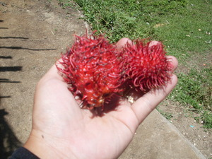

balangas 
/balaŋas/
n.
Nephelium_mutabile
a small type of a wild fruit tree with a tiny leaves; spiny fruit
Masalig ka balangas diyè kanami piru meyilew pad.
We have lots of a fruit tree but they are still unripe.
Cult. Edible red fruit which has a fatty seed. Related to the cultivated rambutan.
Eng. fruit tree variety
OCM: Flora (137)
DDP: Tree (1.5.1)
Online dict status: -
Usage level: RT
Updated by: RJH,AAA,RUL,QDL
Last updated: 13/Oct/2009
This page last updated: 03-Jan-2020
Copyright © 2009-2014, Matigsalug Language Christian Association, Inc